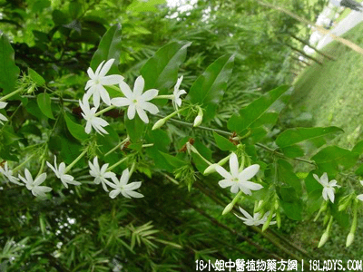

(本文解释权归中药材天地网兄弟站-18小姐中医植物药方网所有,如需转载请注明出处)
扭肚藤(中药材植物名:扭肚藤)(植物科目:木樨科)

别名：白花茶、左扭藤、假素馨。
植物名：扭肚藤。
生长环境：本品为藤状灌木，山地生长扳援于灌木丛中。
分布：广东各地均有，广州附近山地常见。
入药部分：全株。
采集期：夏秋两季。
自采地点：山岗。
主治、用量和用法：1、湿热肚痛：干用1～2亮，清水煎服；2、痢疾：配伍用。
验方：（治痢疾方）扭肚藤1两、锦地罗5钱、天香炉5钱、清水三碗，煎成一碗服。
（方解）本方扭肚藤，锦地罗清大肠湿热，其中扭肚藤又特长止腹中扭痛，天香炉清湿热又能利尿。对治疗湿热下痢里急后重者有效。
（方歌）湿热下痢腹中疼，天香炉合扭肚藤，加入锦地罗煎服，清肠解热显其能。
(本文解释权归中药材天地网兄弟站-18小姐中医植物药方网所有,如需转载请注明出处)